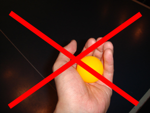
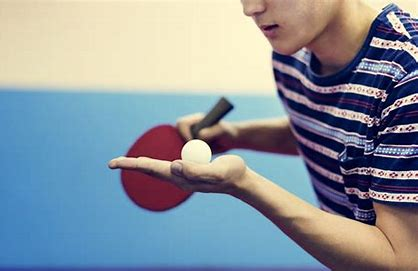
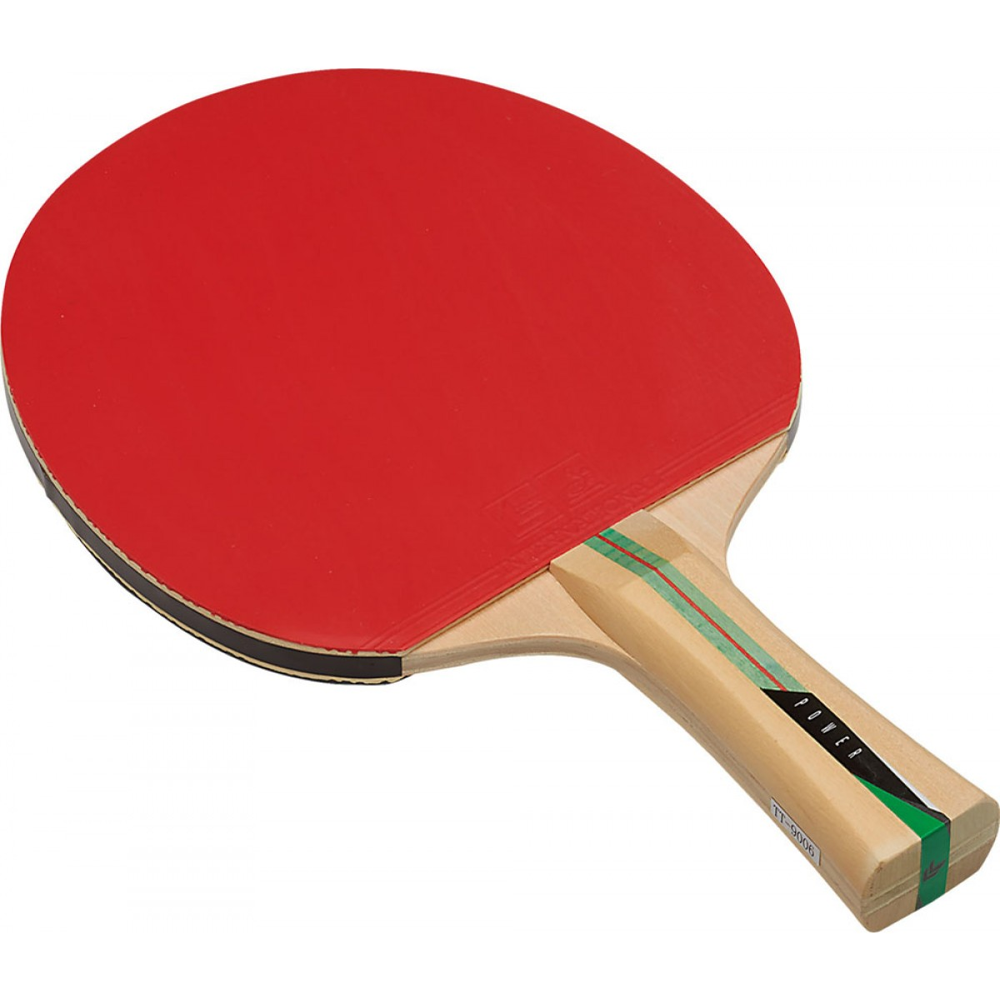

卓球のルール
サーブについてのルール

サーブをする時は、ボールを16センチ以上あげないといけない。また、手のひらを開かなければいけない。

こんな風に手のひらを開いておけば大丈夫です。
ラケットについてのルール

卓球のラケットは、ペンホルダーとシェイクハンドの二種類に分かれており、ペンホルダーは回転をかけやすくボールのコントロールに優れています。シェイクハンドは威力のある玉を打つことができ、初心者でも使い易い特徴があります。ちなみに、ラケットの大きさについての規定はありません！